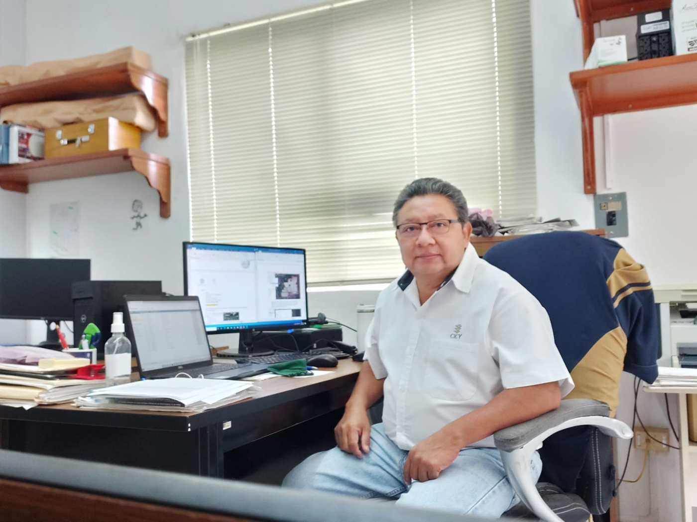
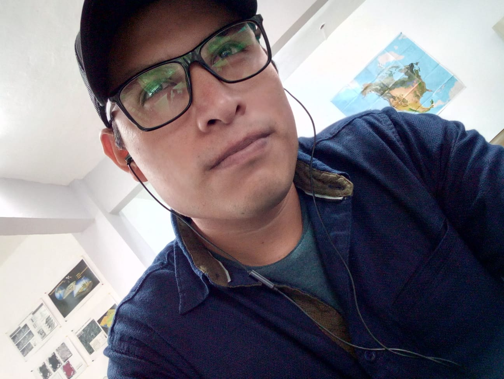
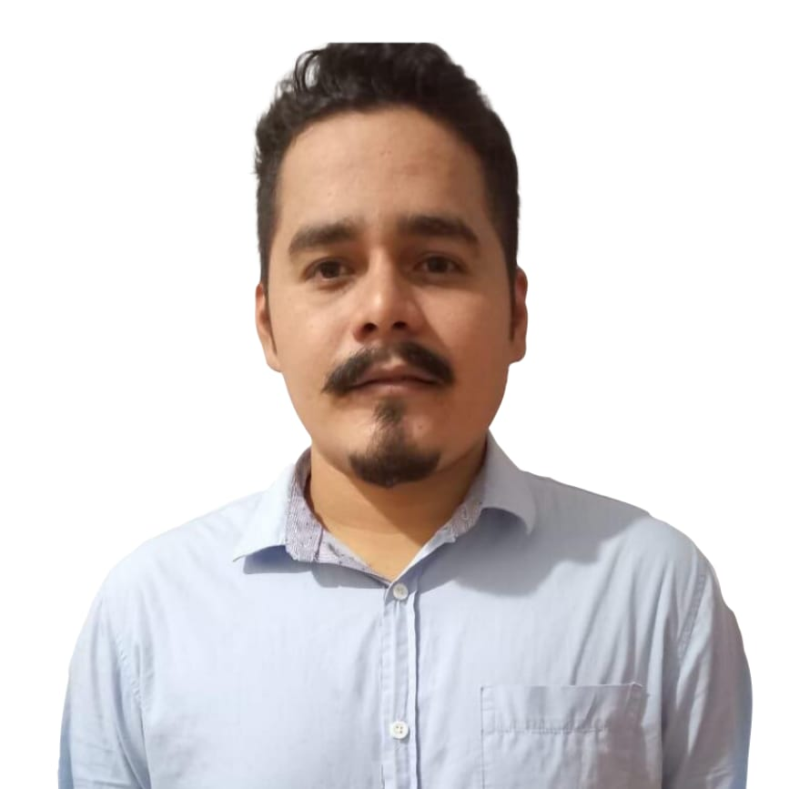
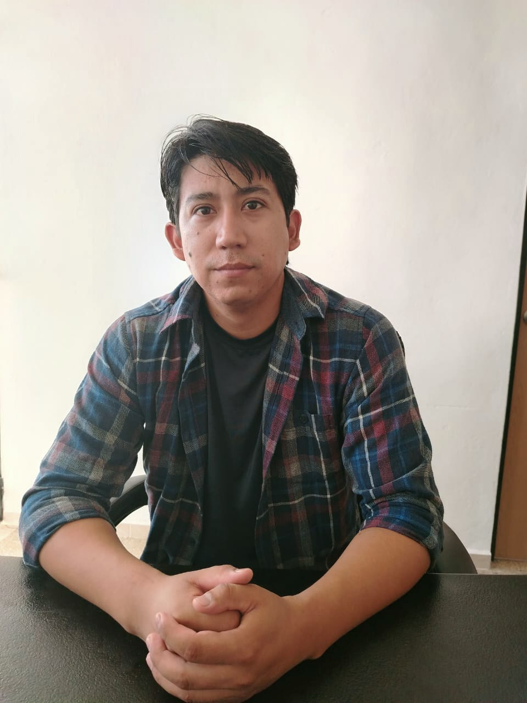
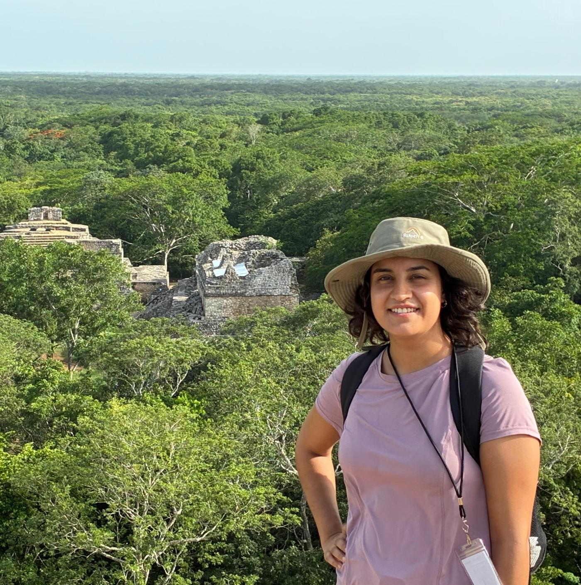
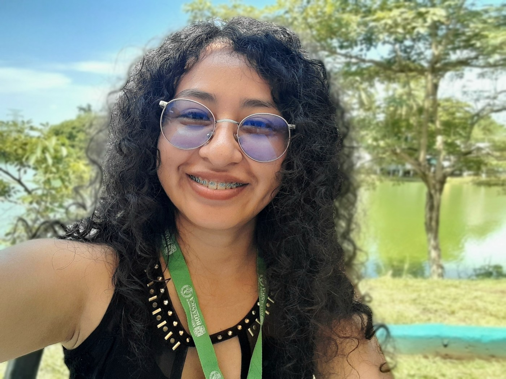

Investigador Responsable
Dr. José Luis Hernández-Stefanoni
El Dr. Hernández-Stefanoni obtuvo el grado de Ingeniero Forestal por la División de Ciencias Forestales de la Universidad Autónoma Chapingo en 1988, el de Maestro en Ciencias en Cómputo Aplicado por el Colegio de Postgraduados en 1992 y el de doctor por Trent University en 2004 en Peterborough Ontario, Canadá.
Ingresó al Centro de Investigación Científica de Yucatán en enero de 2007, donde actualmente es investigador titular C, con nivel III en el Sistema Nacional de Investigadores y miembro de la Academia Mexicana de Ciencias.
Técnico Académico
M.C. Fernando Jesús Tun Dzul
Estudió la licenciatura en biología en la UADY en 1996 y la Maestría en Recursos Naturales y Desarrollo Regional en ECOSUR en 2007.
Actualmente es Técnico Titular c.

Investigadores Posdoctorales
Dra. Gabriela Reyes Palomeque
Proyecto: “Estimación de la biomasa aérea y sus variaciones a través del tiempo en bosques tropicales secos de la Península de Yucatán a través de sensores remotos.”
Apoyo a la investigación
M.C. Juan Andrés Mauricio
Proyecto: “El Impacto de megaproyectos en sistemas socio ecológicos desde una perspectiva transdisciplinaria: El programa de desarrollo integral en los territorios del Tren Maya”

Estudiantes de Doctorado
M. C. Víctor Alexis Peña Lera
Trabajo de Investigación: “Mapeo de la diversidad Taxonómica, Funcional y Filogenética en la pensinsula de Yucatán”. Posgrado en Ciencias Biológicas, CICY. (Fecha de inicio: febrero de 2023).

Estudiantes de Maestría

Ing. Armando Flores Wong
Trabajo de Investigación: “Identificación de corredores biológicos óptimos para fortalecer la conectividad del paisaje urbano en Mérida, Yucatán”. Posgrado en Ciencias Biológicas, CICY. (Fecha de inicio: Diciembre de 2026).
Judith Guadalupe Fuentes Robles
Trabajo de Investigación: «Patrones y factores que afectan la la complejidad extructutal del bosque en la península de Yucatan». (Fecha de inicio: febrero de 2026, Director de Tesis).


Mayte del Rocío Aguilar Canche
Trabajo de Investigación: «Efectos de la configuración del paisaje sobre la diversidad florística del Coquinal al norte de Yucatán». (Fecha de inicio: agosto de 2025, Director de Tesis).